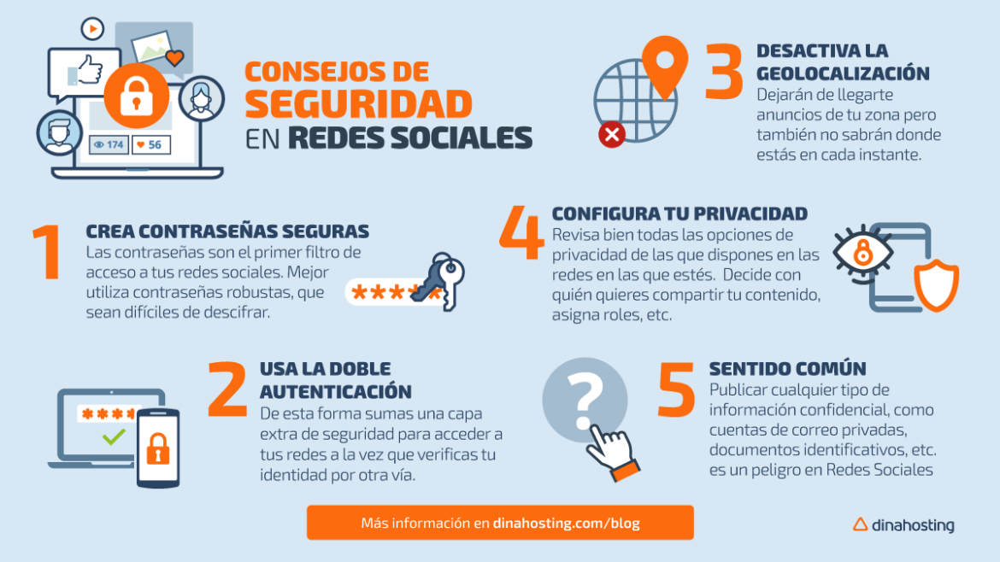

Consejos de seguridad en redes sociales para proteger tu información
Proteger tu información en línea se está volviendo cada vez más importante. Con el crecimiento de las redes sociales, millones de personas pueden fácilmente mantenerse en contacto y expresar su individualidad con amigos, familiares y asociados. Pero con el surgimiento de los hackers de computadoras, es importante protegerse uno mismo de manera proactiva y mantener tu cuenta y tu información privadas y seguras. Aquí tienes algunos consejos útiles para la seguridad en línea y en las redes sociales dirigidos a grupos de todas las edades.
¿Cómo mantener tu seguridad en las redes sociales?
- No compartas tu contraseña. Si la has compartido o sospechas que ha sido robada, deberías cambiar tu contraseña de inmediato, para que tú, y solo tú, tengas acceso a tu cuenta.
- Cambia tu contraseña. Es buena idea cambiar tu contraseña de vez en cuando y elegir una combinación compleja de letras y números, utilizando mayúsculas y minúsculas y otros signos. Y recuerda usar diferentes contraseñas para diferentes sitios de redes sociales.
- Revisa tus configuraciones de seguridad. Si puedes ajustar la configuración de privacidad, elige un nivel adecuado que te resulte cómodo. Elige solo compartir la información que quieras con las personas con que quieras compartirla.
- Controla quién puede realizar una búsqueda para encontrarte. A menudo los sitios de redes sociales te permiten hacer tu perfil "público", permitiendo que las personas puedan realizar búsquedas y encontrarte, o "privado", permitiendo que las personas solamente te puedan encontrar si les das tu dirección.
- No aceptes invitaciones para conectarte con extraños. Si la invitación viene de alguien que comparta una conexión en común, comunícate con tu conexión mutua para confirmar que la invitación es legítima.
- Usa tu buen juicio al publicar en línea. El contenido en Internet durará en línea para siempre, así que ten cuidado de no publicar nada que pueda resultar embarazoso para ti, tu familia o tus socios de negocios.
- Ten cuidado a la hora de hacer clic en enlaces. Cuando en un sitio veas publicaciones o recibas mensajes de "amigos" conteniendo enlaces, trátalos igual que si fueran mensajes de correo electrónico para ayudarte a evitar estafas de phishing.
- Ten cuidado con las "pruebas" y los "juegos". Éstos son divertidos, pero a veces tienen la función de recolectar información tuya.
